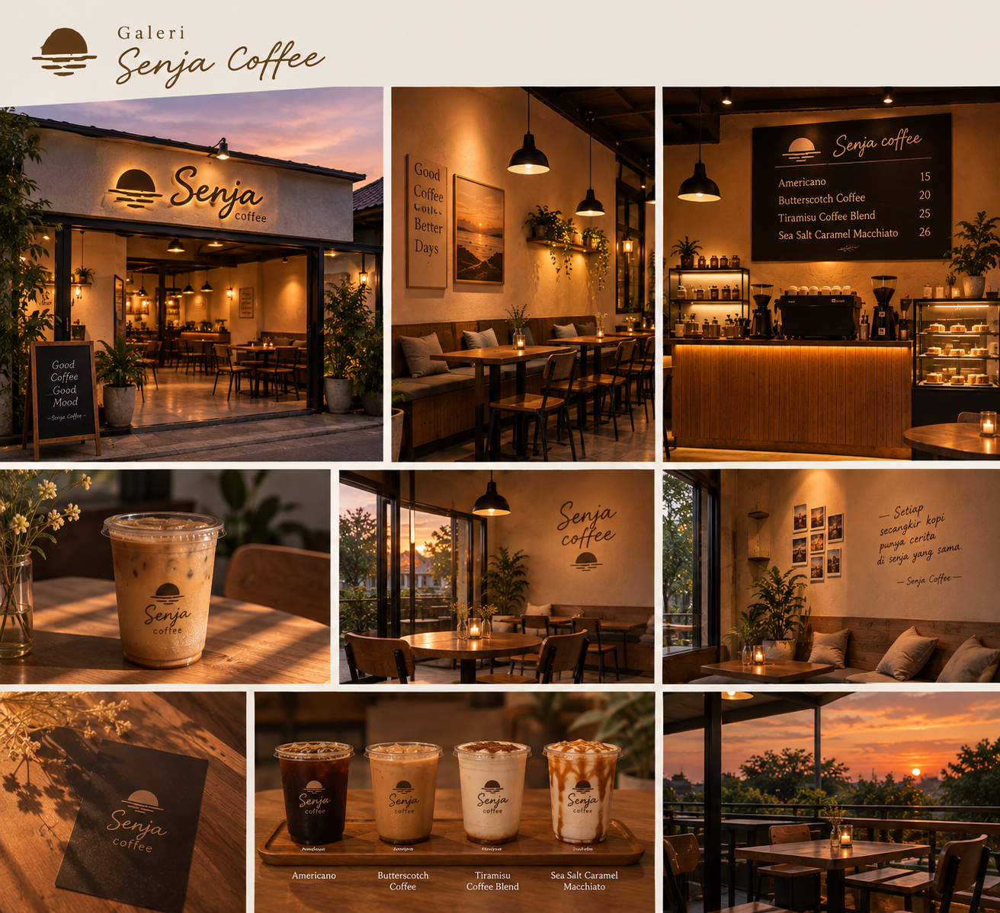
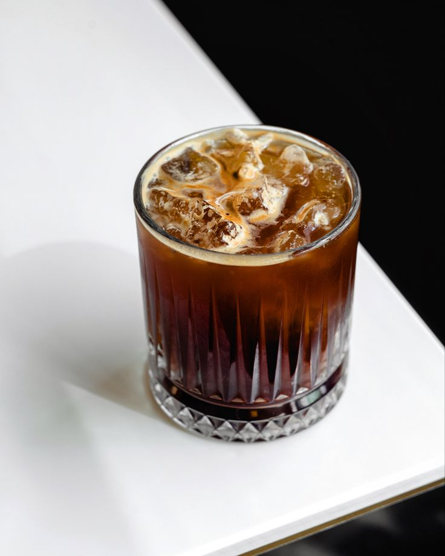
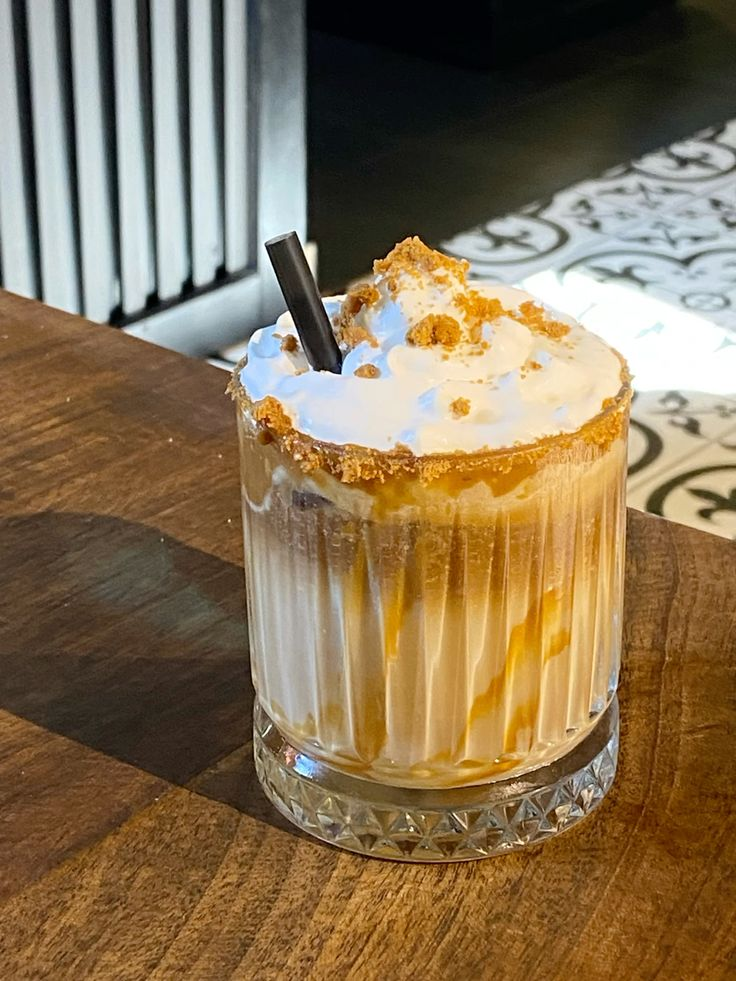
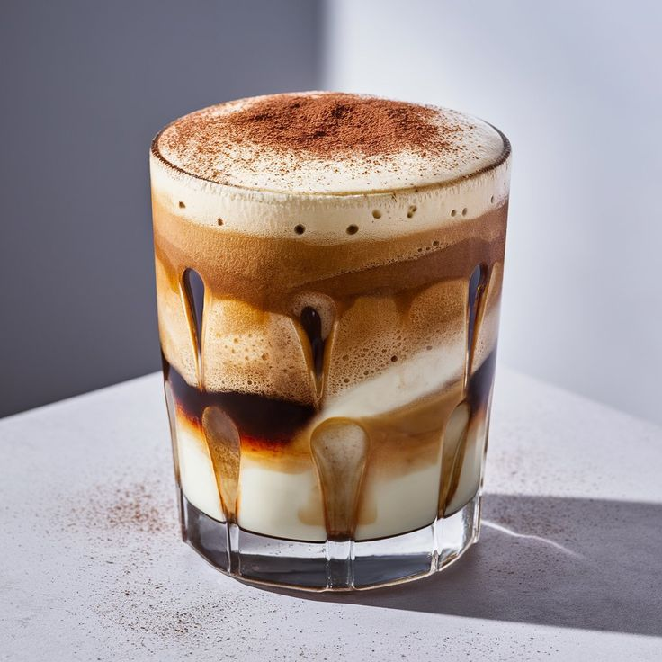
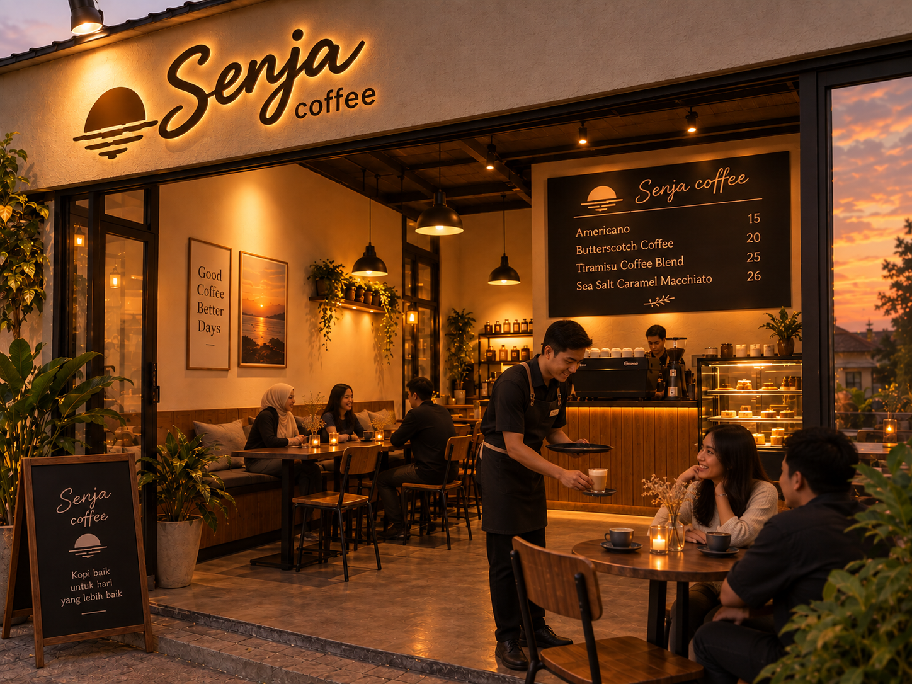
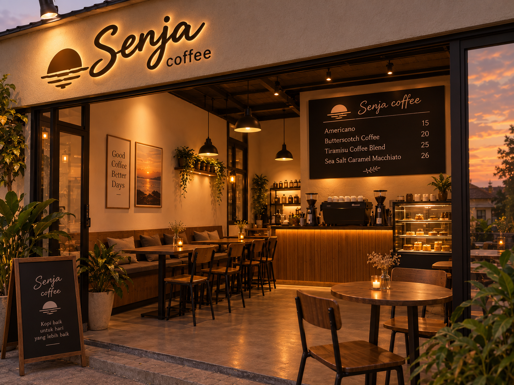
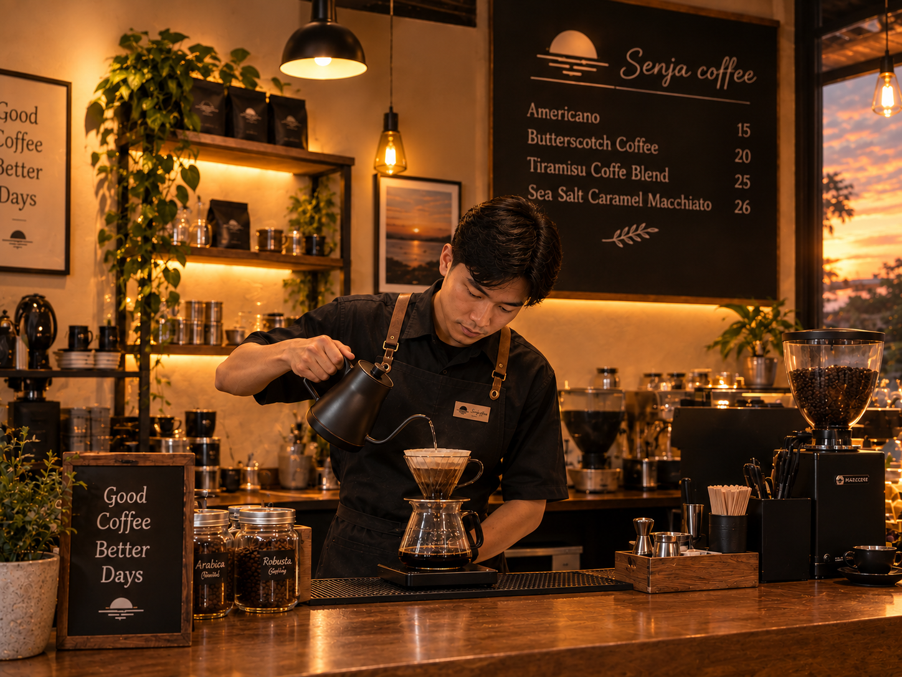
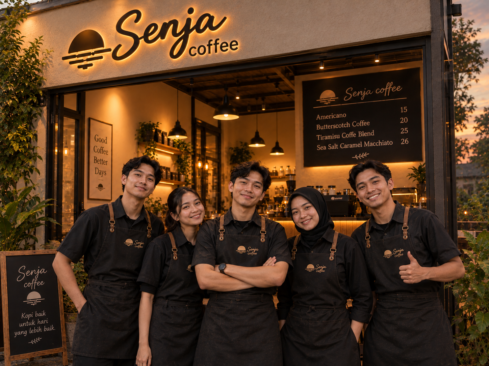

Senja Coffee
Galeri Senja Coffe
Jelajahi berbagai sajian kopi, suasana kedai, dan momen hangat yang hadir di Senja Coffee.

Foto Produk
Beberapa foto dari biji kopi berkualitas Senja Coffee.




Suasana Kedai


Tim Kami
Orang-orang yang menyapa kamu setiap hari.


open sky - Single by. Senja Coffee
Versi full akan diputar tiap satu jam sekali di Kopi Saji.